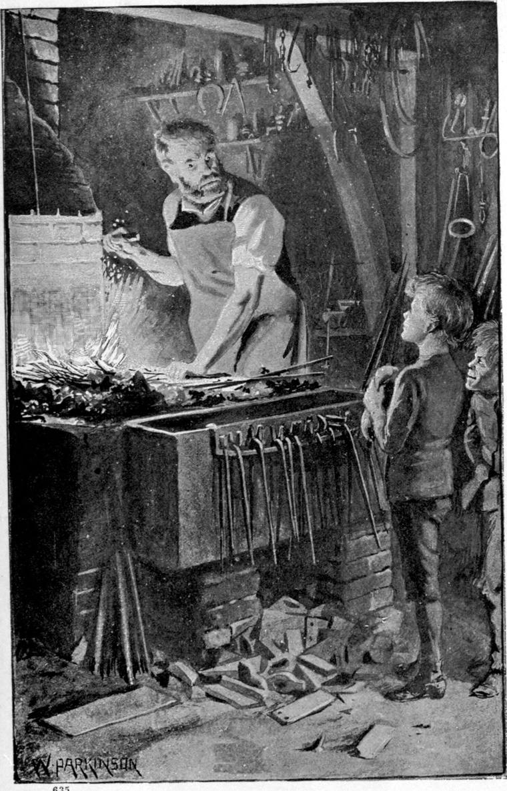

At the end of the wall was a rough boarded fence, in contact with it, and reaching, some fifty yards or so, to a hovel in which a blacksmith, of unknown antecedents, had taken possession of a forsaken forge, and did what odd jobs came in his way. The boys went along the fence till they came to the forge, where, looking in, they saw the blacksmith working his bellows. To one with the instincts of Clare’s birth and breeding, he did not look a desirable acquaintance. Tommy was less fastidious, but he felt that the scowl on the man’s brows boded little friendliness. Clare, however, who hardly knew what fear was, did not hesitate to go in, for he was drawn as with a cart-rope by the glow of the fire, and the sparks which, as they gazed, began, like embodied joys, to fly merrily from the iron. Tommy followed, keeping Clare well between him and the black-browed man, who rained his blows on the rosy iron in his pincers, as if he hated it.
“What do you want, gutter-toads?” he cried, glancing up and seeing them approach. “This ain’t a hotel.”
“But it’s a splendid fire,” rejoined Clare, looking into his face with a wan smile, “and we’re so cold!”
“What’s that to me!” returned the man, who, savage about something, was ready to quarrel with anything. “I didn’t make my fire to warm little devils that better had never been born!”
“No, sir,” answered Clare; “but I don’t think we’d better not have been born. We’re both cold, and nobody but Tommy knows how hungry I am; but your fire is so beautiful that, if you would let us stand beside it a minute or two, we wouldn’t at all mind.”
“Mind, indeed! Mind what, you preaching little humbug?”
“Mind being born, sir.”
“Why do you say sir to me? Don’t you see I’m a working man?”
“Yes, and that’s why. I think we ought to say sir and ma’am to every one that can do something we can’t. Tommy and I can’t make iron do what we please, and you can, sir! It would be a grand thing for us if we could!”
“Oh, yes, a grand thing, no doubt!—Why?”
“Because then we could get something to eat, and somewhere to lie down.”
“Could you? Look at me, now! I can do the work of two men, and can’t get work for half a man!”

“That’s a sad pity!” said Clare. “I wish I had work! Then I would bring you something to eat.”
The man did not tell them why he had not work enough—that his drunkenness, and the bad ways to which it had brought him, with the fact that he so often dawdled over the work that was given him, caused people to avoid him.
“Who said I hadn’t enough to eat? I ain’t come to that yet, young ’un! What made you say that?”
“Because when I had work, I had plenty to eat; and now that I have nothing to do, I have nothing to eat. It’s well I haven’t work now, though,” added Clare with a sigh, “for I’m too tired to do any. Please may I sit on this heap of ashes?”
“Sit where you like, so long ‘s you keep out o’ my way. I ain’t got nothing to give you but a bar of iron. I’ll toast one for you if you would like a bite.”
“No, thank you, sir,” answered Clare, with a smile. “I’m afraid it wouldn’t be digestible. They say toasted cheese ain’t. I wish I had a try though!”
“You’re a comical shaver, you are!” said the blacksmith. “You’ll come to the gallows yet, if you’re a good boy! Them Sunday-schools is doin’ a heap for the gallows!—That ain’t your brother?”
By this time Tommy had begun to feel at home with the blacksmith, from whose face the cloud had lifted a little, so that he looked less dangerous. He had edged nearer to the fire, and now stood in the light of it.
“No,” answered Clare, with an odd doubtfulness in his tone. “I ought to say yes, perhaps, for all men are my brothers; but I mean I haven’t any particular one of my very own.”
“That ain’t no pity; he’d ha’ been no better than you. I’ve a brother I would choke any minute I got a chance.”
While they talked, the blacksmith had put his iron in the fire, and again stood blowing the bellows, when his attention was caught by the gestures of the little red-eyed imp, Tommy, who was making rapid signs to him, touching his forehead with one finger, nodding mysteriously, and pointing at Clare with the thumb of his other hand, held close to his side. He sought to indicate thus that his companion was an innocent, whom nobody must mind. In the blacksmith Tommy saw one of his own sort, and the blacksmith saw neither in Tommy nor in Clare any reason to doubt the hint given him. Not the less was he inclined to draw out the idiot.
“Why do you let him follow you about, if he ain’t your brother?” he said. “He ain’t nice to look at!”
“I want to make him nice,” answered Clare, “and then he’ll be nice to look at. You mustn’t mind him, please, sir. He’s a very little boy, and ain’t been well brought up. His granny ain’t a good woman—at least not very, you know, Tommy!” he added apologetically.
“She’s a damned old sinner!” said Tommy stoutly.
The man laughed.
“Ha, ha, my chicken! you know a thing or two!” he said, as he took his iron from the fire, and laid it again on the anvil.
But besides the brother he would so gladly strangle, there was an idiot one whom he had loved a little and teazed so much, that, when he died, his conscience was moved. He felt therefore a little tender toward the idiot before him. He bethought himself also that his job would soon be at a stage where the fewer the witnesses the better, for he was executing a commission for certain burglars of his acquaintance. He would do no more that night! He had money in his pocket, and he wanted a drink!
“Look here, cubs!” he said; “if you ain’t got nowhere to go to, I don’t mind if you sleep here. There ain’t no bed but the bed of the forge, nor no blankets but this leather apron: you may have them, for you can’t do them no sort of harm. I don’t mind neither if you put a shovelful of slack and a little water now and then on the fire; and if you give it a blow or two with the bellows now and then, you won’t be stone-dead afore the mornin’!—Don’t be too free with the coals, now, and don’t set the shed on fire, and take the bread out of my poor innocent mouth. Mind what I tell you, and be good boys.”
“Thank you, sir,” said Clare. “I thought you would be kind to us! I’ve one friend, a bull, that’s very good to me. So is Jonathan. He’s a horse. The bull’s name is Nimrod. He wants to gore always, but he’s never cross with me.”
The blacksmith burst into a roar of laughter at the idiotic speech. Then he covered the fire with coal, threw his apron over Clare’s head, and departed, locking the door of the smithy behind him.
The boys looked at each other. Neither spoke. Tommy turned to the bellows, and began to blow.
“Ain’t you warm yet?” said Clare, who had seen his mother careful over the coals.
“No, I ain’t. I want a blaze.”
“Leave the fire alone. The coal is the smith’s, and he told us not to waste it.”
“He ain’t no count!” said Tommy, as heartless as any grown man or woman set on pleasure.
“He has given us a place to be warm and sleep in! It would be a shame to do anything he didn’t like. Have you no conscience, Tommy?”
“No,” said Tommy, who did not know conscience from copper. The germ of it no doubt lay in the God-part of him, but it lay deep. Tommy—no worse than many a boy born of better parents—was like a hill full of precious stones, that grows nothing but a few little dry shrubs, and shoots out cold sharp rocks every here and there.
“If you have no conscience,” answered Clare, “one must serve for both—as far as it will reach! Leave go of that bellows, or I’ll make you.”
Tommy let the lever go, turned his back, and wandered, in such dudgeon as he was capable of, to the other side of the shed.
“Hello!” he cried, “here’s a door!—and it ain’t locked, it’s only bolted! Let’s go and see!”
“You may if you like,” answered Clare, “but if you touch anything of the blacksmith’s, I’ll be down on you.”
“All right!” said Tommy, and went out to see if there was anything to be picked up.
Clare got on the stone hearth of the forge, and lay down in the hot ashes, too far gone with hunger to care for the clothes that were almost beyond caring for. He was soon fast asleep; and warmth and sleep would do nearly as much for him as food.